Theory¶
The theory described below and the methods in coolvib are described in detail in [Askerka2016] and [Maurer2016].
Non-adiabatic friction of adsorbate motion on metal surfaces¶
In insulating or most semi-conducting materials the energy spectrum of vibrations and electronic excitations are clearly separated. This is not the case for metals. In metals even the smallest vibrational motion can lead to electronic excitations due to the vanishing gap between occupied and unoccupied states.
{kind=link}
Figure 1: Schematic view of adsorbate vibration (here shown for a CO on Cu(100) internal stretch motion) leading to changes in the electronic structure that excite electron hole-pairs from below to above the Fermi level of the metal Density-of-States.
As shown in Figure 1, adsorbate motion can lead to changes in the electronic structure that facilitate low energy electronic excitations in the metal band structure. We can treat this interaction between electrons and vibrations with perturbation theory if the following assumptions are true:
- the coupling is weak compared to the individual contributions of electrons and nuclei
- electron-hole pair excitations do not lead to a qualitative change in the nuclear dynamics
Non-adiabatic relaxation rates from first order time-dependent perturbation theory¶
The relaxation rate of a vibrational mode  due to nonadiabatic coupling is given by Fermi’s Golden Rule as derived from time-dependent perturbation theory and is given by:
due to nonadiabatic coupling is given by Fermi’s Golden Rule as derived from time-dependent perturbation theory and is given by:
(1)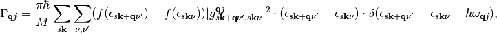
where the sums run over spin, crystal momentum vectors  and all pairs of eigenvectors
and all pairs of eigenvectors  and 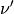 with the state occupations
and 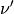 with the state occupations  given by the Fermi-Dirac distribution and the coupling elements 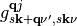
given by the Fermi-Dirac distribution and the coupling elements 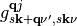
(2)
For a detailed derivation of these equations see
The relaxation rate relates to the lifetime of the mode by 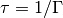 and to the vibrational linewidth by 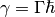. In eq. (2)  is the atomic displacement vector corresponding to a given vibrational motion described by a wave-vector
is the atomic displacement vector corresponding to a given vibrational motion described by a wave-vector  and a quantum number
and a quantum number  .
.  represents the derivative vector with respect to all cartesian atomic positions.
represents the derivative vector with respect to all cartesian atomic positions.
It is often assumed in literature [Head-Gordon1995], [Hellsing1984] that perturbations 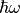 due to vibrations are small and the density of state is almost constant in a large energy range around the Fermi level. This so-called quasi-static approximation leads to following simplification:
(3)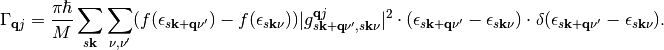
The Friction Tensor¶
We can reformulate the matrix elements of expression (2) in terms of a cartesian coupling tensor:
![|g_{s\mathbf{k+q}\nu',s\mathbf{k}\nu}^{\mathbf{q}j}|^2 &= g_{s\mathbf{k+q}\nu',s\mathbf{k}\nu}^{\mathbf{q}j}\cdot g_{s\mathbf{k}\nu,s\mathbf{k+q}\nu'}^{\mathbf{q}j} = \\ & \mathbf{e}^T_{\mathbf{q}j}\cdot\braket{\psi_{s\mathbf{k}\nu}|\mathbf{\nabla}_{\mathbf{R}}|\psi_{s\mathbf{k+q}\nu'}}\cdot\braket{\psi_{s\mathbf{k+q}\nu'}|\mathbf{\nabla}_{\mathbf{R}}|\psi_{s\mathbf{k}\nu}} \cdot\mathbf{e}_{\mathbf{q}j} = \\ & \mathbf{e}^T_{\mathbf{q}j}\cdot \mathbf{G}_{s\mathbf{k+q}\nu',s\mathbf{k}\nu}\cdot \mathbf{e}_{\mathbf{q}j}.](_images/math/fec8c23e951da8b7806abc197dc104edfda61d71.png)
The elements of G are defined as:
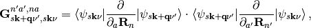
where n and n’ indicate the n-th (n’-th) atom and a and a’ indicate one of the three cartesian directions x, y, and z. Inserting G into eq. (3) we arrive at:
(4)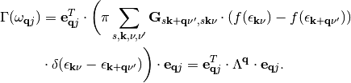
In eq. (4) we have defined the friction tensor 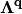 with dimensions 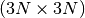 where N is the number of atoms. The elements of are defined as
(5)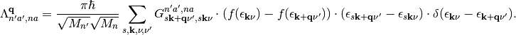
Vibrational relaxation rates of adsorbates¶
Eq. (4) shows that using the friction tensor one can calculate relaxation rates and vibrational lifetimes for arbitrary molecular motions.

Figure 2: Collective motion of a periodic overlayer of CO atoms on Cu(100)
Considering periodic boundary conditions, the collective motion of an adsorbate overlayer (as shown in Fig. 2) can be described with a single adsorbate vibrational mode with wave vector 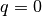. The corresponding relaxatio rate for this vibration is given by:
(6)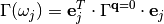
Calculation of vibrational cooling using this approach is the most common [Head-Gordon1992] , [Persson1982] and is the default setting when calculating lifetimes in coolvib.
{kind=link}
Figure 3: Motion of only one CO atom adsorbed on Cu(100), effectively breaking periodicity.
When considering the lifetime due to motion of a single adsorbate, such as is the case for impinging adsorbates,
low coverages or non-collective adlayer motion (see Fig. 3) one effectively needs to integrate over all possible vibrations of the same type with different wave vectors , effectively amounting to a Fourier expansion in reciprocal space. Correspondingly, the relaxation rate is given by:
(7)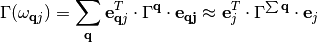
In the corresponding relaxation rate, we additionally include excitations that in principle violate momentum-conservation. If we assume that adsorbate vibrations interact only by simple phase modulation we can assume the atomic displacements of individual adsorbate images to be independent of wave vector yielding following expression for the friction tensor in this case:
(8)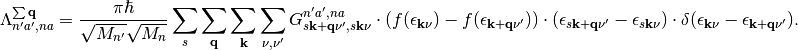
Numerical considerations and working equations¶
Depending on if one wants to calculate vibrational lifetimes of periodic overlayers or single adsorbates one is left with evaluating eqs. (5) or (8). This is by no means a simple task due to the slow convergence of electronic structure close to the Fermi level and intricacies of evaluating a delta function in a non-equidistant space of excitations.
Some of these issues can be solved by transforming the equation into a continuous representation using the the Density-of-State of the system:
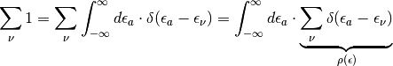
Introducing the Density-of-State for both sums over eigenstates in (5) we arrive at
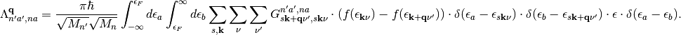
The change in variable from the discrete space to the continuous space for the last delta function and the energy difference can be understood as a consequence of sequentially evaluating the first to delta functions (and by equivalence) Now we change the integration variables from occupied and unoccupied states to excitation energies
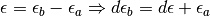
and arrive at
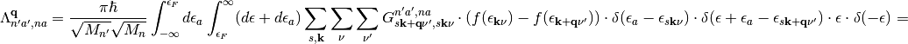
(9)![&= \frac{\pi\hbar}{\sqrt{M_{n'}}\sqrt{M_n}} \int_{-\infty}^{\epsilon_F} d\epsilon_a\int_{\epsilon_F}^{\infty} d\epsilon_a \sum_{s,\mathbf{k}}\sum_{\nu}\sum_{\nu'} G_{s\mathbf{k+q}\nu',s\mathbf{k}\nu}^{n'a',na} \cdot(f(\epsilon_{\mathbf{k}\nu})-f(\epsilon_{\mathbf{k+q}\nu'}))\cdot\delta(\epsilon_a-\epsilon_{s\mathbf{k}\nu})\cdot\delta(\epsilon+\epsilon_a-\epsilon_{s\mathbf{k+q}\nu'})\cdot\epsilon \cdot\delta(-\epsilon) = \\
&= \frac{\pi\hbar}{\sqrt{M_{n'}}\sqrt{M_n}} \int_{-\infty}^{\epsilon_F} d\epsilon_a\int_{-\infty}^{\infty} d\epsilon \sum_{s,\mathbf{k}}\sum_{\nu}\sum_{\nu'} G_{s\mathbf{k+q}\nu',s\mathbf{k}\nu}^{n'a',na} \cdot(f(\epsilon_{\mathbf{k}\nu})-f(\epsilon_{\mathbf{k+q}\nu'}))\cdot\delta(\epsilon_a-\epsilon_{s\mathbf{k}\nu})\cdot\delta(\epsilon+\epsilon_a-\epsilon_{s\mathbf{k+q}\nu'})\cdot\epsilon \cdot\delta(-\epsilon)](_images/math/bf16070934f716576b61686656f0339ce0188a38.png)
The first term in eq. (9) vanishes because the integration variable for occupied states 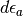 is not defined in the range between  and 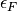. In the second term we can use the following properties of delta functions
and 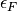. In the second term we can use the following properties of delta functions
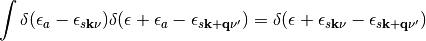
and
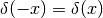
to arrive at
(10)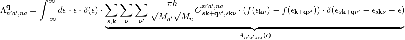
By rewriting the friction tensor in this way we have gained several things:
- The continuous formulation enables simple numerical discretization and accurate evaluation of the delta function 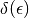, thereby reducing numerical instabilities.
- We have defined a set of electron-phonon spectral functions 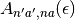 for all combinations of cartesian components, which describe the principal spectrum of available coupling channels between electronic and nuclear degrees of freedom.
- The second delta function transforms the set of finite transitions into smooth continuous spectral functions and therefore improves convergence with respect to Brillouin zone sampling.
The expression for the spectral functions
(11)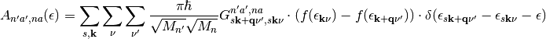
and its corresponding equivalent for isolated adsorbates
(12)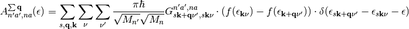

represent the main working equations of this software.
References¶
| [Askerka2016] |
|
| [Maurer2016] |
|
| [Hellsing1984] | B. Hellsing, and M. Persson, Physi. Scripta 29, 360-371 (1984) |